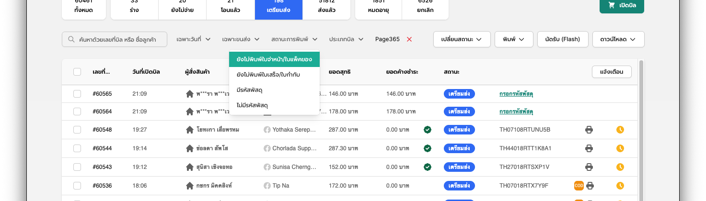
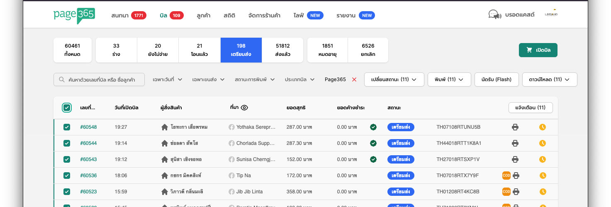
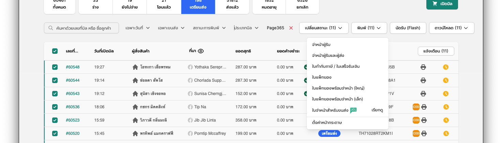
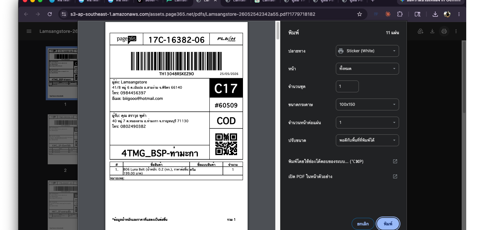
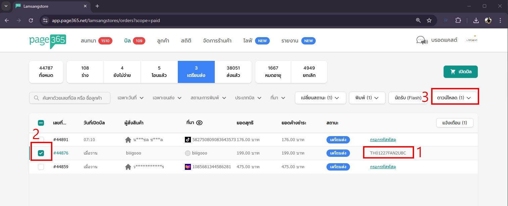
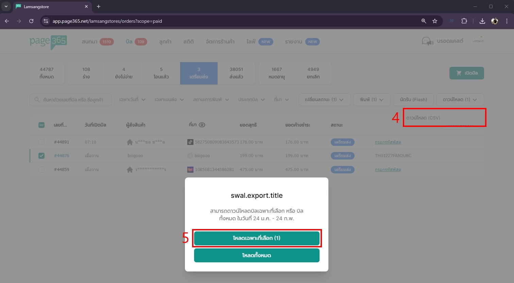
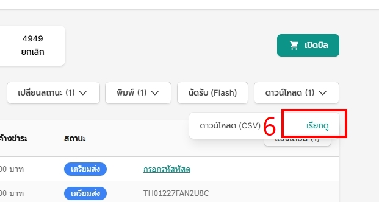
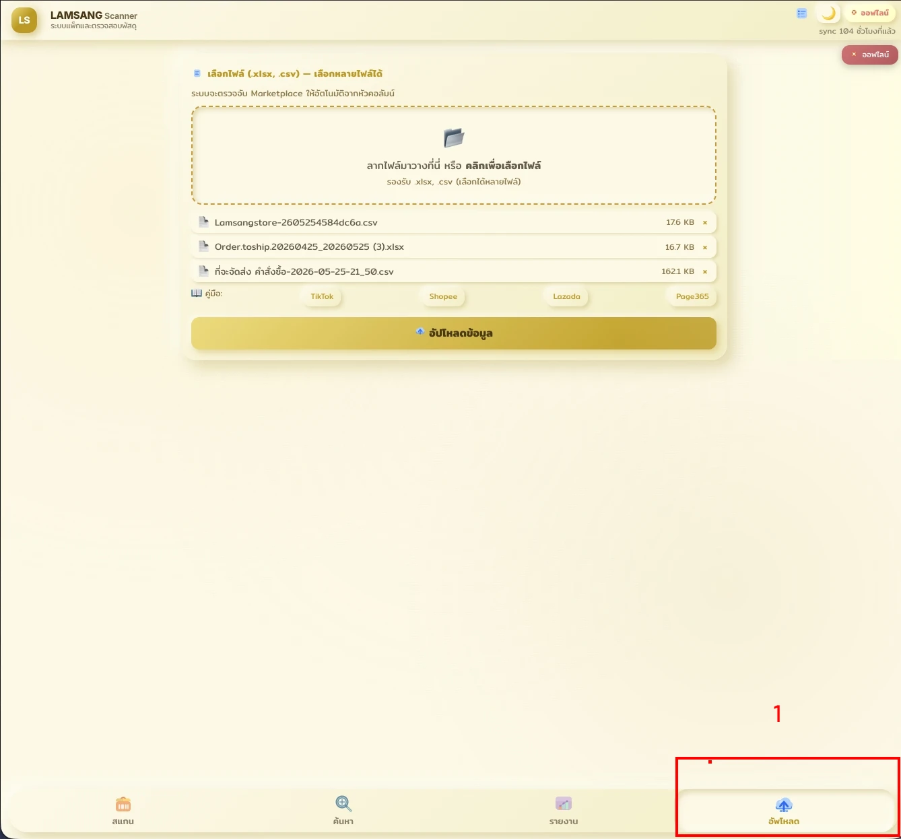
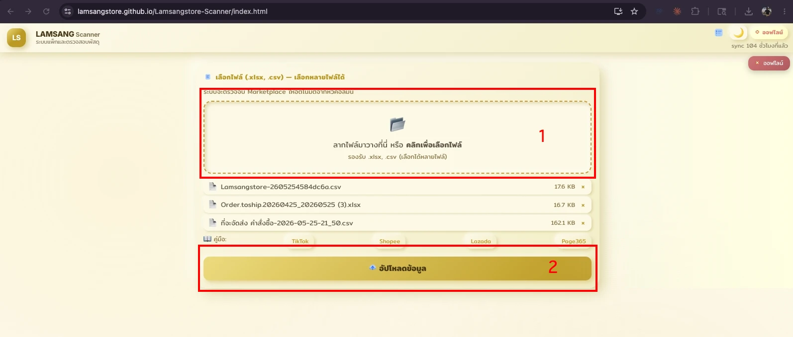
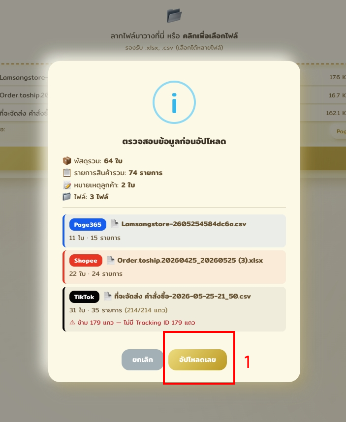

วิธีดาวน์โหลดไฟล์ CSV และนำเข้าสู่ระบบ Lamsangstore Scanner
เข้าหน้าจัดการบิลที่ app.page365.net จากนั้นที่แถบกรองด้านบน คลิกเมนู "ที่มา" แล้วเลือก "Page365" เพื่อให้แสดงเฉพาะออเดอร์ที่มาจาก Page365
คลิกแท็บ "เตรียมส่ง" ที่แถบเมนูซ้าย จากนั้นคลิกเมนู "สถานะการพิมพ์" แล้วเลือก "ยังไม่พิมพ์ใบจ่าหน้า/ใบแพ็คของ" เพื่อให้แสดงเฉพาะออเดอร์ที่ยังไม่ได้พิมพ์ใบปะหน้า

ติ๊กที่ ช่องสี่เหลี่ยมบนสุดของตาราง (หัวคอลัมน์) เพื่อเลือกออเดอร์ทั้งหมดในหน้านี้พร้อมกัน

คลิกเมนู "พิมพ์" ที่แถบเครื่องมือด้านบนตาราง แล้วเลือกรายการ "ใบจ่าหน้าสำหรับขนส่ง" ระบบจะเริ่มเตรียมไฟล์ PDF ใบปะหน้าให้

รอจนตัวเลขจำนวนออเดอร์ปรากฏที่ปุ่ม "พิมพ์" แล้วคลิก "เรียกดู" ระบบจะเปิดไฟล์ PDF ใบปะหน้าขึ้นมา ให้กดปุ่ม "พิมพ์ (Print)" ที่มุมขวาบน แล้วเลือกขนาดกระดาษ 100×150 และเครื่องพิมพ์ Sticker ก่อนกดยืนยันการพิมพ์

ในหน้าจัดการบิล ให้เลือกแท็บ "เตรียมส่ง" ตรวจสอบว่าออเดอร์มีเลขพัสดุแล้ว (1) จากนั้นติ๊กเลือกออเดอร์ที่ต้องการ (2) แล้วคลิกปุ่ม "ดาวน์โหลด" (3)

เลือกเมนูย่อย "ดาวน์โหลด (CSV)" (4) ระบบจะแสดงหน้าต่างป๊อปอัปขึ้นมา ให้คลิกปุ่ม "โหลดเฉพาะที่เลือก" (5)

รอระบบเตรียมไฟล์สักครู่ จนกระทั่งข้อความเปลี่ยนเป็น "เรียกดู" (6) ให้คลิกเพื่อเซฟไฟล์ CSV ลงเครื่องคอมพิวเตอร์

เปิด Lamsangstore Scanner แล้วกดปุ่ม "📥 อัพโหลด" (1) ที่แถบเมนูด้านล่างขวา จะมีหน้าต่างป๊อปอัปแสดงขึ้นมา

คลิกที่ กรอบประใหญ่ (1) หรือลากไฟล์ CSV ที่ดาวน์โหลดมาจาก Page365 วางในกรอบ — รองรับ .xlsx และ .csv เลือกได้หลายไฟล์พร้อมกัน (ระบบตรวจจับ Marketplace อัตโนมัติจากหัวคอลัมน์ของไฟล์) เมื่อเห็นรายการไฟล์ปรากฏแล้ว คลิกปุ่ม "อัปโหลดข้อมูล" (2)

ระบบจะแสดงป๊อปอัป "ตรวจสอบข้อมูลก่อนอัปโหลด" สรุปจำนวน พัสดุรวม / รายการสินค้ารวม / หมายเหตุลูกค้า / ไฟล์ พร้อม Marketplace ที่ตรวจจับได้ของแต่ละไฟล์ หากมีคำเตือนสีส้ม (เช่น "ข้าม X แถว — ไม่มี Tracking ID") ให้ตรวจสอบไฟล์ก่อน เมื่อข้อมูลถูกต้องแล้ว คลิก "อัปโหลดเลย" (1) เพื่อยืนยัน
